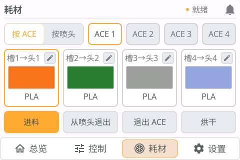
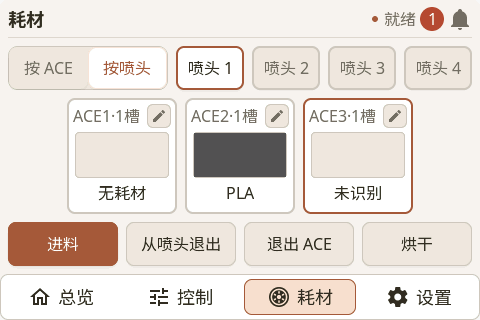
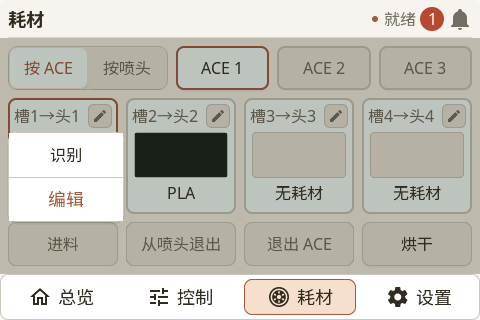
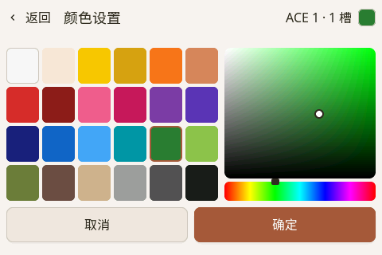
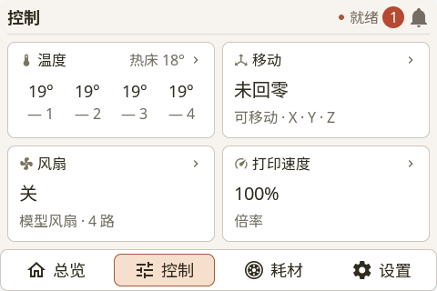
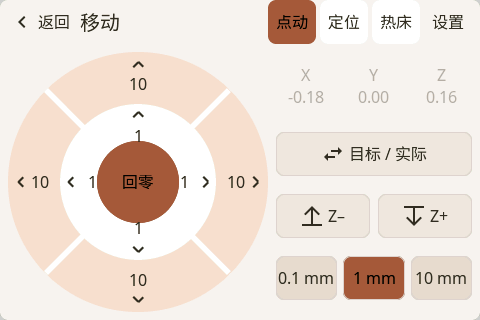
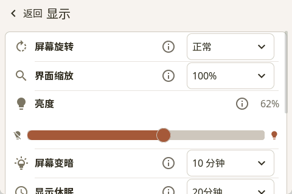

首创「按 ACE / 按喷头」双视角切换
多台 ACE 接满 16 卷料时，最头疼的是“哪盒几号槽连着几号喷头”。在耗材页顶部一键切换视角：装料看「按 ACE」，选料看「按喷头」，管路归属直接写在卡片上。
心智负担归零
槽1→头1 直观路由
不再为 4 喷头 × 16 槽位的多盒路由发懵，也不用为了改个耗材颜色或退一卷料到处翻电脑网页。 snapfxxker-os（233 固件）在 PAXX 12 底座上重做了整套 480×320 原生触屏界面，并整合多固件 ACE 混插与防呆恢复机制——一切高频操作，在机身上 1~2 步直达。
U1 的机身屏幕只有 480×320。我们把每一像素都花在「减少思考、减少点按、减少出错」上。
多台 ACE 接满 16 卷料时，最头疼的是“哪盒几号槽连着几号喷头”。在耗材页顶部一键切换视角：装料看「按 ACE」，选料看「按喷头」，管路归属直接写在卡片上。
耗材页底部常驻 进料 / 从喷头退出 / 退出 ACE / 烘干 四个大按钮；单槽编辑角标弹出 识别（RFID）/ 编辑 快捷菜单；首页直接展示四头温度与当前供料色点，不用来回切页确认。
兼容 Bambu Lab MIFARE 1K 与 Anycubic NTAG RFID 自动识别；就算用无标签第三方耗材，也能通过 24 色快捷色块 + HSV 调色板直接在屏上设好材质和颜色，自动同步给切片与 Web。
内置 u1-device-service 升级空闲检查与互斥锁，升级失败不砖机且保留旧版目录可回滚；彻底修复原厂 V2 NO FLOW 后 ACE_UNLOAD_HEAD 卸料死锁，卡料时退料重装一气呵成。
ace2k 检测到插料自动推进停泊并尝试读取 RFID，省去手动点进丝和来回试探。
耗材页点「按喷头」→ 选中目标槽 → 点「进料」，自动完成原槽退料与新槽上料校验。
无需切到电脑端，机身直接控制各台 ACE 烘干启停；国内 220V 用户可选配调优版 ace2k-0.16.0-233b。
以官方 2.1.2（2.1.2.159）为参照，从屏幕交互、多色能力、硬件兼容到日常运维逐项拆解。
| 对比维度 | Snapmaker U1 原厂固件 | snapfxxker-os（233 固件） | 日常易用性提升 |
|---|---|---|---|
| 多色供料能力 | 原生仅支持 4 个独立外置料盘（最多 4 色），不支持多盒切换。 | 新增集成 MultiACE .15.112，支持最多 4 台 ACE 共 16 槽自动换料与路由映射。 |
四头并行 + 多盒扩展，复杂多色件无需半夜守着手动换卷。 |
| ACE 固件生态 | 无原生 ACE 支持。 | 新增同时兼容 ACE 1、ACE 2 Pro 原厂 / OpenACE (V1.2.04O) 与 ace2k Klipper-MCU 固件同机混插。 |
手里新旧盒子混着插就能用，不必全套强刷同一固件。 |
| 480×320 触屏交互 | 原厂 UI 仅围绕 4 卷供料设计，无多盒槽位视图，中文字体与信息密度受限。 | 重构自制黄白高对比原生屏（HelixScreen 233），提供 按 ACE / 按喷头双视角、首页四头色点与温度、环形双步进点动盘、完整中文字体。 | 信息一眼看清，高频动作全在首页/首屏，小屏不误触、不截字。 |
| RFID 与第三方耗材 | 主要依赖官方耗材标签，非官方料卷颜色与材质管理繁琐。 | 增强支持 Bambu Lab MIFARE 1K 与 Anycubic NTAG 标签读取；内置 24 色快捷块 + 连续 HSV 取色器。 | 拓竹 / 纵维 / 第三方杂牌卷都能准确标色，屏幕改完同步 Web。 |
| 送丝 / 回抽精准度 | 外置手动进退料，无长管行程闭环。 | 优化ace2k 插料自动进丝停泊（tag_read_load）+ 实时编码器行程追踪回抽（实测 1526.7mm 精准回位）。 |
消除过量回抽把料拉出进料口的问题，换料成功率大幅提升。 |
| 烘干与 220V 适配 | 无法在打印机屏幕或统一界面控制料盒烘干。 | 优化屏幕与 Web 直接启停烘干；附带 220V/50Hz 升温曲线调优版 ace2k-0.16.0-233b 固件（消除 31 秒误报停机）。 |
国内 220V 电网直接稳跑烘干，不再反复掉线或报错。 |
| 异常处理与换料效率 | 异常中断后恢复流程零散，缺乏细粒度恢复引导。 | 修复修复 V2 phase3 NO FLOW 后 ACE_UNLOAD_HEAD 卸料死锁；支持可选 Multi 模式后台换料（ace_bg_swap）。 |
偶发未咬合时一键退料重装不卡死，后台换料进一步省时间。 |
| 摄像头与扩展能力 | 封闭生态，缺少开源 Web 生态集成。 | 保留+整合基于 PAXX 12 完整保留 1080p/30fps WebRTC / MPP 摄像头、Fluidd、MultiACE Web 与旧版自动回滚升级器。 | 远程看监控、切片直传、升级可回滚，兼顾稳定与可玩性。 |
点击任意卡片可放大查看细节。这套视觉风格专为高辨识度与单手触控打磨。
四头温度与供料色点、选文件/重打、速度风扇灯光一屏掌握。

4 台料盒快速切换，路由直标，进料/退料/烘干触手可及。

按喷头反向聚合候选料槽，跨盒选料直觉化、零换算。

就地触发 RFID 识别或手动编辑，拒绝层层跳转。

第三方无芯片耗材也能 3 秒精准标色，全端同步显示。

温度、移动、4 路风扇、打印倍率清晰分区，绝不拥挤。

1mm / 10mm 双环操作盘 + 中心回零 + Z 轴独立大按键。

亮度滑块、旋转、变暗与休眠策略直观可调，夜间不刺眼。
每一项底层改进都来自真实的 4× ACE 多色换料场景与硬件实测。
不再被单一盒子固件绑定，按需升级、逐步替换。
V1.2.04O）ace2k Klipper-MCU 原生驱动，含 RFID / 自动进丝 / 精准编码器回抽ace2k-0.16.0-233b）针对国内 220V/50Hz 电网实测调校，告别 31 秒升温率误报。
ACE2K_LANES_CONCURRENT=1）打包即做全链路自动化校验，把翻车风险拦在刷机前。
load_failed 卸料死锁，异常恢复畅通无阻
刷写前请先校验 SHA-256 并备份 printer_data/config。Multi 模式后台换料（ace_bg_swap）默认关闭，确认普通换料顺畅后再按需开启。